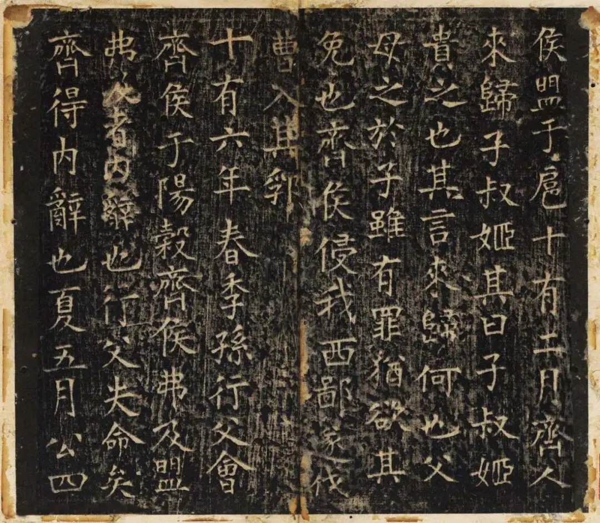
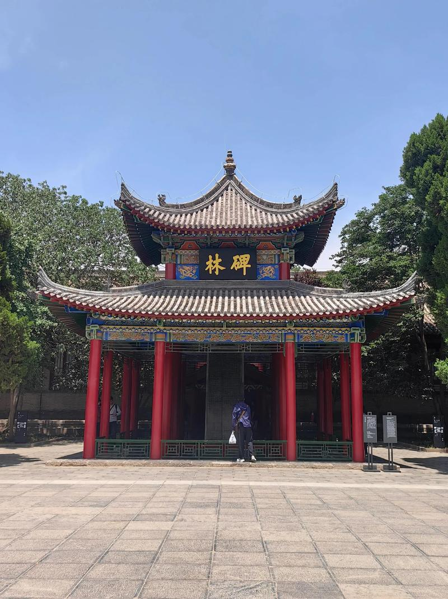
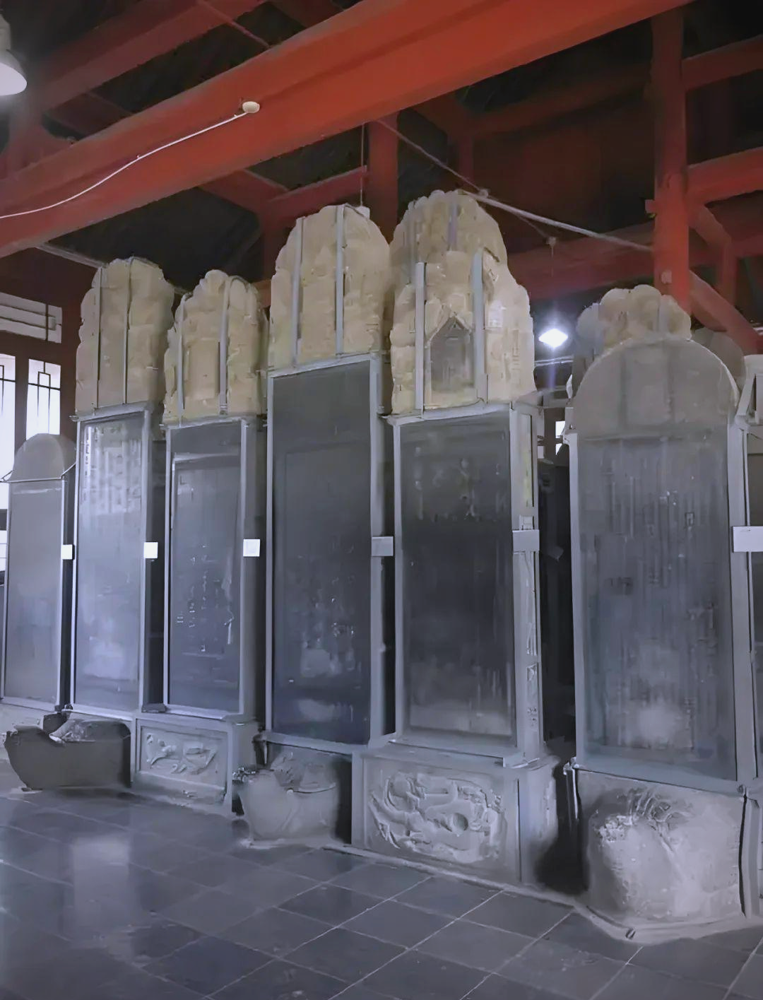
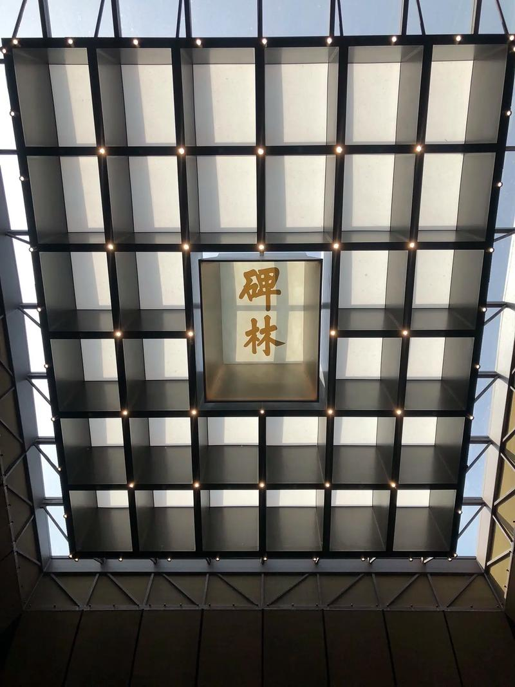
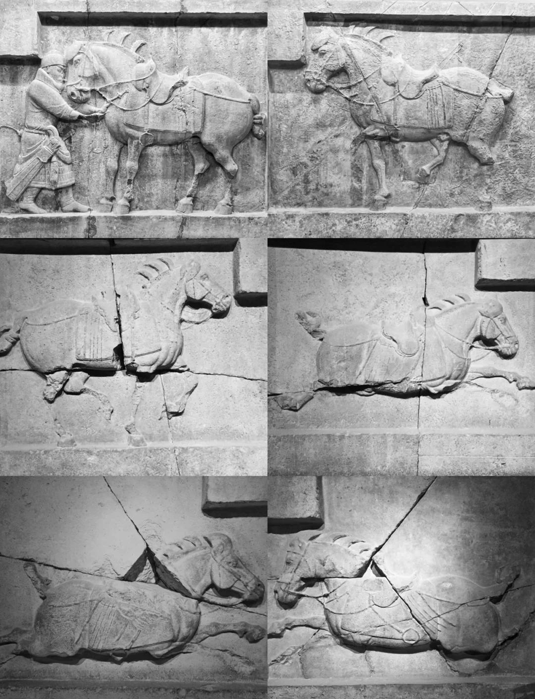

碑林博物院
历史沿革
西安碑林的起源可追溯至唐代。唐天宝四年（745年），唐玄宗李隆基亲笔书写《石台孝经》并刻石立于长安国子监内，这是碑林最早的石刻之一。唐开成二年（837年），为规范儒家经典文本，朝廷将《周易》《尚书》《诗经》《周礼》《仪礼》《礼记》《春秋左氏传》《春秋公羊传》《春秋穀梁传》《论语》《孝经》《尔雅》十二部经典刻于114块石碑之上，世称"开成石经"，是碑林最核心的藏品。
北宋元祐二年（1087年），为保护唐代石刻，漕运使吕大忠将散布各处的石碑集中迁至孔庙（今碑林所在地），奠定了碑林的基础。此后历经金、元、明、清各代不断搜集增补，碑林规模日益扩大。1944年正式成立陕西省历史博物馆（碑林为其核心），1992年更名为西安碑林博物院。

开成石经 — 古代的"标准教科书"
"开成石经"是中国古代规模最大的石刻教科书。唐代印刷术尚未普及，儒家经典靠手抄流传，讹误甚多。为避免以讹传讹，朝廷将十二部经典刻于石碑，作为全国读书人的标准文本。这些石碑共114方，两面刻字，总计65万余字，字体为标准的唐楷，工整端庄。它们是中国古代教育史和印刷史上的一座丰碑，被誉为"世界上最大的石质图书"。
书法艺术的殿堂
碑林博物院是全世界书法爱好者心中的圣地。这里汇集了从秦汉到明清两千多年间历代书法名家的真迹刻石：秦代李斯的《峄山刻石》（小篆之祖）、汉代《曹全碑》（隶书典范）、东晋王羲之的《圣教序》（行书神品）、唐代颜真卿的《多宝塔碑》和《颜氏家庙碑》（楷书丰碑）、柳公权的《玄秘塔碑》（"颜筋柳骨"之柳体）、张旭和怀素的草书《千字文》……一座碑林，就是半部中国书法史。
"碑者，埤也。上古帝王，纪号封禅，树石埤岳，故曰碑也。" —— 刘勰《文心雕龙·诔碑》
石刻艺术馆
除碑石外，碑林博物院还收藏了大量石刻艺术品，包括汉代的画像石、唐代的陵墓石刻、佛教造像等。其中著名的"昭陵六骏"（部分）是唐太宗李世民陵墓前的六块浮雕石刻，刻画了太宗在建立唐朝过程中骑乘的六匹战马，造型雄健生动，是中国古代雕塑艺术的巅峰之作。
图片画廊




参观信息
| 地址 | 西安市碑林区三学街15号（文昌门内） |
|---|---|
| 开放时间 | 08:00 — 18:30（旺季）；08:00 — 18:00（淡季） |
| 门票 | 65 元（成人）/ 32 元（学生） |
| 交通 | 地铁 2 号线永宁门站 D2 口出，沿城墙向东步行约10分钟；或乘公交至"文昌门"站 |
| 小贴士 | 建议预留至少2—3小时参观；可租用语音导览器；碑林外三学街为古玩书画一条街，值得一逛；书法爱好者可购买碑拓复制品作为纪念 |